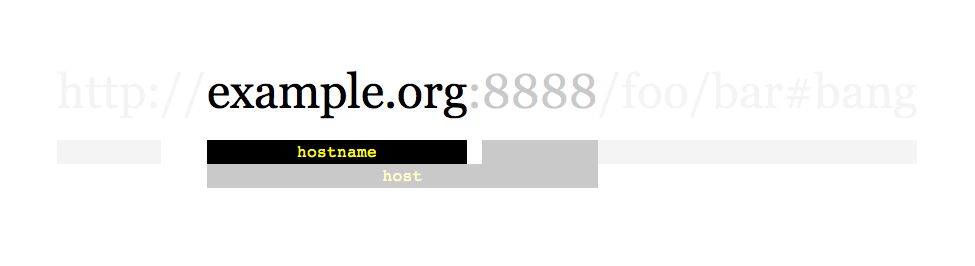

location.host vs location.hostname and cross-browser compatibility?
Which one of these is the most effective vs checking if the user agent is accessing via the correct domain.
We would like to show a small js based 'top bar' style warning if they are accessing the domain using some sort of web proxy (as it tends to break the js).
We were thinking about using the following:
var r = /.*domain\.com$/; if (r.test(location.hostname)) { // showMessage ... }
That would take care of any subdomains we ever use.
Which should we use host or hostname?
In Firefox 5 and Chrome 12:
console.log(location.host); console.log(location.hostname);
.. shows the same for both.
Is that because the port isn't actually in the address bar?
W3Schools says host contains the port.
Should location.host/hostname be validated or can we be pretty certain in IE6+ and all the others it will exist?
Answer

As a little memo: the interactive link anatomy
--
In short (assuming a location of http://example.org:8888/foo/bar#bang):
-
hostnamegives youexample.org -
hostgives youexample.org:8888
Suggest
host just includes the port number if there is one specified. If there is no
port number specifically in the URL, then it returns the same as hostname. You
pick whether you care to match the port number or not. See
https://developer.mozilla.org/en-US/docs/Web/API/Location for more info on the
window.location object and the various choices it has for matching (with or
without port).
I would assume you want hostname to just get the site name.